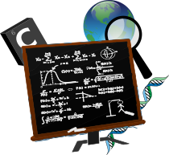
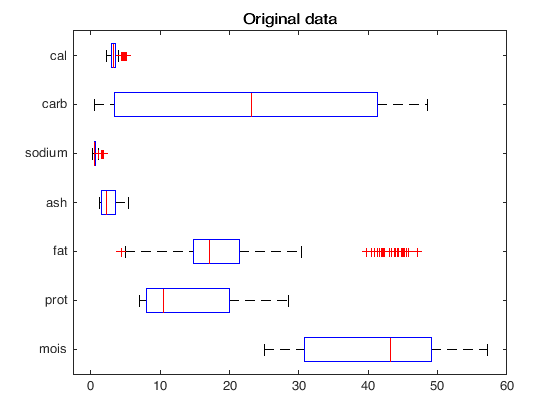
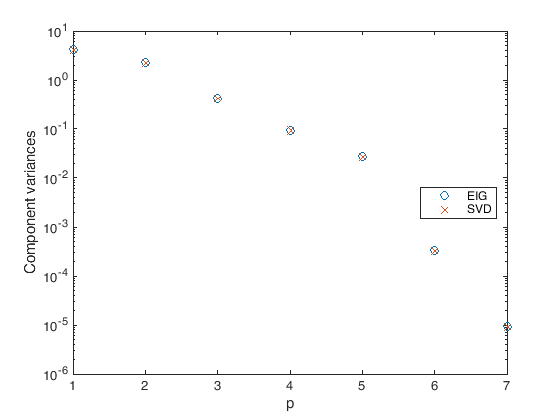
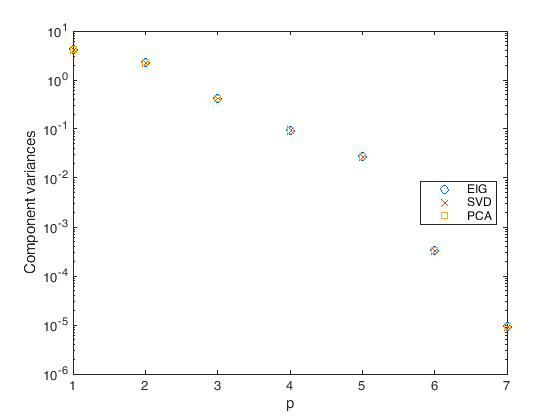

<!DOCTYPE html>

<html lang="en">
  <head>
    <meta charset="utf-8" />
    <meta name="viewport" content="width=device-width, initial-scale=1.0" /><meta name="generator" content="Docutils 0.17.1: http://docutils.sourceforge.net/" />

    <title>Reading, writing and plotting data &#8212; Numerical recipes for environmental sciences with MATLAB</title>
    
  <!-- Loaded before other Sphinx assets -->
  <link href="_static/styles/theme.css?digest=1999514e3f237ded88cf" rel="stylesheet">
<link href="_static/styles/pydata-sphinx-theme.css?digest=1999514e3f237ded88cf" rel="stylesheet">

    
  <link rel="stylesheet"
    href="_static/vendor/fontawesome/5.13.0/css/all.min.css">
  <link rel="preload" as="font" type="font/woff2" crossorigin
    href="_static/vendor/fontawesome/5.13.0/webfonts/fa-solid-900.woff2">
  <link rel="preload" as="font" type="font/woff2" crossorigin
    href="_static/vendor/fontawesome/5.13.0/webfonts/fa-brands-400.woff2">

    <link rel="stylesheet" type="text/css" href="_static/pygments.css" />
    <link rel="stylesheet" href="_static/styles/sphinx-book-theme.css?digest=5115cc725059bd94278eecd172e13a965bf8f5a9" type="text/css" />
    <link rel="stylesheet" type="text/css" href="_static/togglebutton.css" />
    <link rel="stylesheet" type="text/css" href="_static/copybutton.css" />
    <link rel="stylesheet" type="text/css" href="_static/mystnb.css" />
    <link rel="stylesheet" type="text/css" href="_static/sphinx-thebe.css" />
    <link rel="stylesheet" type="text/css" href="_static/exercise.css" />
    <link rel="stylesheet" type="text/css" href="_static/proof.css" />
    <link rel="stylesheet" type="text/css" href="_static/design-style.b7bb847fb20b106c3d81b95245e65545.min.css" />
    
  <!-- Pre-loaded scripts that we'll load fully later -->
  <link rel="preload" as="script" href="_static/scripts/pydata-sphinx-theme.js?digest=1999514e3f237ded88cf">

    <script data-url_root="./" id="documentation_options" src="_static/documentation_options.js"></script>
    <script src="_static/jquery.js"></script>
    <script src="_static/underscore.js"></script>
    <script src="_static/doctools.js"></script>
    <script src="_static/clipboard.min.js"></script>
    <script src="_static/copybutton.js"></script>
    <script src="_static/scripts/sphinx-book-theme.js?digest=9c920249402e914e316237a7dbc6769907cce411"></script>
    <script>let toggleHintShow = 'Click to show';</script>
    <script>let toggleHintHide = 'Click to hide';</script>
    <script>let toggleOpenOnPrint = 'true';</script>
    <script src="_static/togglebutton.js"></script>
    <script>var togglebuttonSelector = '.toggle, .admonition.dropdown, .tag_hide_input div.cell_input, .tag_hide-input div.cell_input, .tag_hide_output div.cell_output, .tag_hide-output div.cell_output, .tag_hide_cell.cell, .tag_hide-cell.cell';</script>
    <script src="_static/design-tabs.js"></script>
    <script>const THEBE_JS_URL = "https://unpkg.com/thebe@0.8.2/lib/index.js"
const thebe_selector = ".thebe,.cell"
const thebe_selector_input = "pre"
const thebe_selector_output = ".output, .cell_output"
</script>
    <script async="async" src="_static/sphinx-thebe.js"></script>
    <script>window.MathJax = {"options": {"processHtmlClass": "tex2jax_process|mathjax_process|math|output_area"}}</script>
    <script defer="defer" src="https://cdn.jsdelivr.net/npm/mathjax@3/es5/tex-mml-chtml.js"></script>
    <link rel="index" title="Index" href="genindex.html" />
    <link rel="search" title="Search" href="search.html" />
    <link rel="next" title="Modeling evolutionary problems" href="odes.html" />
    <link rel="prev" title="An introduction to MATLAB" href="intromatlab.html" />
    <meta name="viewport" content="width=device-width, initial-scale=1" />
    <meta name="docsearch:language" content="en">
    

    <!-- Google Analytics -->
    
  </head>
  <body data-spy="scroll" data-target="#bd-toc-nav" data-offset="60">
<!-- Checkboxes to toggle the left sidebar -->
<input type="checkbox" class="sidebar-toggle" name="__navigation" id="__navigation" aria-label="Toggle navigation sidebar">
<label class="overlay overlay-navbar" for="__navigation">
    <div class="visually-hidden">Toggle navigation sidebar</div>
</label>
<!-- Checkboxes to toggle the in-page toc -->
<input type="checkbox" class="sidebar-toggle" name="__page-toc" id="__page-toc" aria-label="Toggle in-page Table of Contents">
<label class="overlay overlay-pagetoc" for="__page-toc">
    <div class="visually-hidden">Toggle in-page Table of Contents</div>
</label>
<!-- Headers at the top -->
<div class="announcement header-item noprint"></div>
<div class="header header-item noprint"></div>

    
    <div class="container-fluid" id="banner"></div>

    

    <div class="container-xl">
      <div class="row">
          
<!-- Sidebar -->
<div class="bd-sidebar noprint" id="site-navigation">
    <div class="bd-sidebar__content">
        <div class="bd-sidebar__top"><div class="navbar-brand-box">
    <a class="navbar-brand text-wrap" href="index.html">
      
        <!-- `logo` is deprecated in Sphinx 4.0, so remove this when we stop supporting 3 -->
        
      
      
      
      
      
      <h1 class="site-logo" id="site-title">Numerical recipes for environmental sciences with MATLAB</h1>
      
    </a>
</div><form class="bd-search d-flex align-items-center" action="search.html" method="get">
  <i class="icon fas fa-search"></i>
  <input type="search" class="form-control" name="q" id="search-input" placeholder="Search this book..." aria-label="Search this book..." autocomplete="off" >
</form><nav class="bd-links" id="bd-docs-nav" aria-label="Main">
    <div class="bd-toc-item active">
        
        <ul class="nav bd-sidenav bd-sidenav__home-link">
            <li class="toctree-l1">
                <a class="reference internal" href="intro.html">
                    Numerical recipes for environmental sciences with MATLAB
                </a>
            </li>
        </ul>
        <ul class="current nav bd-sidenav">
 <li class="toctree-l1">
  <a class="reference internal" href="intromatlab.html">
   An introduction to MATLAB
  </a>
 </li>
 <li class="toctree-l1 current active">
  <a class="current reference internal" href="#">
   Reading, writing and plotting data
  </a>
 </li>
 <li class="toctree-l1">
  <a class="reference internal" href="odes.html">
   Modeling evolutionary problems
  </a>
 </li>
 <li class="toctree-l1">
  <a class="reference internal" href="parameterfitting.html">
   Fitting data to models
  </a>
 </li>
 <li class="toctree-l1">
  <a class="reference internal" href="graphsandnetworks.html">
   Graphs and Networks
  </a>
 </li>
 <li class="toctree-l1">
  <a class="reference internal" href="images.html">
   Working with images
  </a>
 </li>
 <li class="toctree-l1">
  <a class="reference internal" href="linearalgebra.html">
   Linear Algebra
  </a>
 </li>
</ul>

    </div>
</nav></div>
        <div class="bd-sidebar__bottom">
             <!-- To handle the deprecated key -->
            
            <div class="navbar_extra_footer">
            Powered by <a href="https://jupyterbook.org">Jupyter Book</a>
            </div>
            
        </div>
    </div>
    <div id="rtd-footer-container"></div>
</div>


          


          
<!-- A tiny helper pixel to detect if we've scrolled -->
<div class="sbt-scroll-pixel-helper"></div>
<!-- Main content -->
<div class="col py-0 content-container">
    
    <div class="header-article row sticky-top noprint">
        


<div class="col py-1 d-flex header-article-main">
    <div class="header-article__left">
        
        <label for="__navigation"
  class="headerbtn"
  data-toggle="tooltip"
data-placement="right"
title="Toggle navigation"
>
  

<span class="headerbtn__icon-container">
  <i class="fas fa-bars"></i>
  </span>

</label>

        
    </div>
    <div class="header-article__right">
<div class="menu-dropdown menu-dropdown-launch-buttons">
  <button class="headerbtn menu-dropdown__trigger"
      aria-label="Launch interactive content">
      <i class="fas fa-rocket"></i>
  </button>
  <div class="menu-dropdown__content">
    <ul>
      <li>
        <a href="https://mybinder.org/v2/gh/Cirdans-Home/recipesforenvsciences2024/main?urlpath=tree/src/ioplot.md"
   class="headerbtn"
   data-toggle="tooltip"
data-placement="left"
title="Launch on Binder"
>
  

<span class="headerbtn__icon-container">
  
    
  </span>
<span class="headerbtn__text-container">Binder</span>
</a>

      </li>
      
    </ul>
  </div>
</div>

<button onclick="toggleFullScreen()"
  class="headerbtn"
  data-toggle="tooltip"
data-placement="bottom"
title="Fullscreen mode"
>
  

<span class="headerbtn__icon-container">
  <i class="fas fa-expand"></i>
  </span>

</button>

<div class="menu-dropdown menu-dropdown-repository-buttons">
  <button class="headerbtn menu-dropdown__trigger"
      aria-label="Source repositories">
      <i class="fab fa-github"></i>
  </button>
  <div class="menu-dropdown__content">
    <ul>
      <li>
        <a href="https://github.com/Cirdans-Home/recipesforenvsciences2024"
   class="headerbtn"
   data-toggle="tooltip"
data-placement="left"
title="Source repository"
>
  

<span class="headerbtn__icon-container">
  <i class="fab fa-github"></i>
  </span>
<span class="headerbtn__text-container">repository</span>
</a>

      </li>
      
      <li>
        <a href="https://github.com/Cirdans-Home/recipesforenvsciences2024/issues/new?title=Issue%20on%20page%20%2Fioplot.html&body=Your%20issue%20content%20here."
   class="headerbtn"
   data-toggle="tooltip"
data-placement="left"
title="Open an issue"
>
  

<span class="headerbtn__icon-container">
  <i class="fas fa-lightbulb"></i>
  </span>
<span class="headerbtn__text-container">open issue</span>
</a>

      </li>
      
    </ul>
  </div>
</div>

<div class="menu-dropdown menu-dropdown-download-buttons">
  <button class="headerbtn menu-dropdown__trigger"
      aria-label="Download this page">
      <i class="fas fa-download"></i>
  </button>
  <div class="menu-dropdown__content">
    <ul>
      <li>
        <a href="_sources/ioplot.ipynb"
   class="headerbtn"
   data-toggle="tooltip"
data-placement="left"
title="Download notebook file"
>
  

<span class="headerbtn__icon-container">
  <i class="fas fa-code"></i>
  </span>
<span class="headerbtn__text-container">.ipynb</span>
</a>

      </li>
      
      <li>
        <a href="_sources/ioplot.md"
   class="headerbtn"
   data-toggle="tooltip"
data-placement="left"
title="Download source file"
>
  

<span class="headerbtn__icon-container">
  <i class="fas fa-file"></i>
  </span>
<span class="headerbtn__text-container">.md</span>
</a>

      </li>
      
      <li>
        
<button onclick="printPdf(this)"
  class="headerbtn"
  data-toggle="tooltip"
data-placement="left"
title="Print to PDF"
>
  

<span class="headerbtn__icon-container">
  <i class="fas fa-file-pdf"></i>
  </span>
<span class="headerbtn__text-container">.pdf</span>
</button>

      </li>
      
    </ul>
  </div>
</div>
<label for="__page-toc"
  class="headerbtn headerbtn-page-toc"
  
>
  

<span class="headerbtn__icon-container">
  <i class="fas fa-list"></i>
  </span>

</label>

    </div>
</div>

<!-- Table of contents -->
<div class="col-md-3 bd-toc show noprint">
    <div class="tocsection onthispage pt-5 pb-3">
        <i class="fas fa-list"></i> Contents
    </div>
    <nav id="bd-toc-nav" aria-label="Page">
        <ul class="visible nav section-nav flex-column">
 <li class="toc-h2 nav-item toc-entry">
  <a class="reference internal nav-link" href="#principal-component-analysis">
   Principal Component Analysis
  </a>
  <ul class="nav section-nav flex-column">
   <li class="toc-h3 nav-item toc-entry">
    <a class="reference internal nav-link" href="#computing-the-pca-eingevalues-and-singular-values">
     Computing the PCA: Eingevalues and Singular Values
    </a>
   </li>
   <li class="toc-h3 nav-item toc-entry">
    <a class="reference internal nav-link" href="#pca-from-svd">
     PCA from SVD
    </a>
   </li>
   <li class="toc-h3 nav-item toc-entry">
    <a class="reference internal nav-link" href="#using-the-matlab-routine">
     Using the MATLAB routine
    </a>
   </li>
  </ul>
 </li>
 <li class="toc-h2 nav-item toc-entry">
  <a class="reference internal nav-link" href="#nonnegative-matrix-factorization">
   Nonnegative Matrix Factorization
  </a>
 </li>
</ul>

    </nav>
</div>
    </div>
    <div class="article row">
        <div class="col pl-md-3 pl-lg-5 content-container">
            <!-- Table of contents that is only displayed when printing the page -->
            <div id="jb-print-docs-body" class="onlyprint">
                <h1>Reading, writing and plotting data</h1>
                <!-- Table of contents -->
                <div id="print-main-content">
                    <div id="jb-print-toc">
                        
                        <div>
                            <h2> Contents </h2>
                        </div>
                        <nav aria-label="Page">
                            <ul class="visible nav section-nav flex-column">
 <li class="toc-h2 nav-item toc-entry">
  <a class="reference internal nav-link" href="#principal-component-analysis">
   Principal Component Analysis
  </a>
  <ul class="nav section-nav flex-column">
   <li class="toc-h3 nav-item toc-entry">
    <a class="reference internal nav-link" href="#computing-the-pca-eingevalues-and-singular-values">
     Computing the PCA: Eingevalues and Singular Values
    </a>
   </li>
   <li class="toc-h3 nav-item toc-entry">
    <a class="reference internal nav-link" href="#pca-from-svd">
     PCA from SVD
    </a>
   </li>
   <li class="toc-h3 nav-item toc-entry">
    <a class="reference internal nav-link" href="#using-the-matlab-routine">
     Using the MATLAB routine
    </a>
   </li>
  </ul>
 </li>
 <li class="toc-h2 nav-item toc-entry">
  <a class="reference internal nav-link" href="#nonnegative-matrix-factorization">
   Nonnegative Matrix Factorization
  </a>
 </li>
</ul>

                        </nav>
                    </div>
                </div>
            </div>
            <main id="main-content" role="main">
                
              <div>
                
  <section class="tex2jax_ignore mathjax_ignore" id="reading-writing-and-plotting-data">
<h1>Reading, writing and plotting data<a class="headerlink" href="#reading-writing-and-plotting-data" title="Permalink to this headline">#</a></h1>
<p>One of the transverse usages of MATLAB is as a tool for analyzing and plotting
data coming from the most various sources. This material covers the commands
and the ideas we may need to perform these tasks.</p>
<p>As you should remember from the introduction to the language, in MATLAB
the most natural way of representing data is with matrices, scalars are
<span class="math notranslate nohighlight">\(1\times 1\)</span> matrices. But how can you <strong>populate these matrices</strong> with the data
coming from your experiments? <strong>Are</strong> always <strong>matrices</strong> the <strong>right format</strong>?</p>
<p>We will start with an <em>example</em>, from
<a class="reference external" href="https://raw.githubusercontent.com/Cirdans-Home/recipesforenvsciences2023/main/src/data/london_combined_2019_all.csv">here</a>
you can download a <strong>csv</strong> file containing information on the quantity of
pm2 particles from pollution stations in the city of London in 2019.</p>
<div class="admonition tip">
<p class="admonition-title">Tip</p>
<p>CSV stands for comma-separated values. These are delimited text files which use
a comma to separate values. <strong>Each line</strong> of the file is <strong>a data record</strong>.
<strong>Each record</strong> consists of <strong>one or more fields</strong>, separated by commas.</p>
<p>In most of them the separator is indeed a comma, and this justifies the source
of the name for the format. Nevertheless, this is not always the case, and
other delimiters can be found. In well formatted files each line will have
the same number of fields.</p>
</div>
<p>Let us work with the data we have just downloaded. First of all, we create
a new <em>MATLAB script</em> called  <code class="docutils literal notranslate"><span class="pre">londonpollution.m</span></code>, and we put the downloaded
data in the same folder of the script</p>
<div class="highlight-matlab notranslate"><div class="highlight"><pre><span></span><span class="c">%% London Pollution Data</span><span class="w"></span>
<span class="c">% Analysis of the Pollution data from London.</span><span class="w"></span>

<span class="nb">clear</span><span class="p">;</span><span class="w"> </span><span class="nb">clc</span><span class="p">;</span><span class="w"> </span><span class="n">close</span><span class="w"> </span><span class="s">all</span><span class="p">;</span><span class="w"></span>
</pre></div>
</div>
<p>If you look at the first lines of the CSV file you have downloaded, you will
see that in the same file appear different types of data, <em>strings</em>, <em>numbers</em>,
<em>datetime</em>, and so on. This means that we <strong>cannot store</strong> all these information
in a matrix. Matrices only take data of homogeneous type. The right type of
variable to use is a <code class="docutils literal notranslate"><span class="pre">table</span></code>.</p>
<p>We use the command <code class="docutils literal notranslate"><span class="pre">readtable</span></code> to load all this information into MATLAB</p>
<div class="highlight-matlab notranslate"><div class="highlight"><pre><span></span><span class="n">london</span><span class="w"> </span><span class="p">=</span><span class="w"> </span><span class="nb">readtable</span><span class="p">(</span><span class="s">&#39;london_combined_2019_all.csv&#39;</span><span class="p">);</span><span class="w"></span>
</pre></div>
</div>
<p>After these are in memory, you can get some information on the variable by
writing in the <strong>command line</strong>:</p>
<div class="highlight-matlab notranslate"><div class="highlight"><pre><span></span><span class="nb">whos</span><span class="w"> </span><span class="n">london</span><span class="w"></span>
</pre></div>
</div>
<p>and getting the answer</p>
<div class="highlight-bash notranslate"><div class="highlight"><pre><span></span>Name            Size               Bytes  Class    Attributes
london      24676x9             <span class="m">16527487</span>  table   
</pre></div>
</div>
<p>that tells us that we have loaded a table with 24676 rows, divided in 9 columns.
Again from the command window we can look at what are the first rows by doing:</p>
<div class="highlight-matlab notranslate"><div class="highlight"><pre><span></span><span class="nb">head</span><span class="p">(</span><span class="n">london</span><span class="p">)</span><span class="w"></span>
</pre></div>
</div>
<p>that prints out</p>
<div class="highlight-bash notranslate"><div class="highlight"><pre><span></span>&gt;&gt; head<span class="o">(</span>london<span class="o">)</span>

<span class="nv">ans</span> <span class="o">=</span>

  <span class="m">8</span>×9 table

      city      latitude    longitude    country            utc                       location               parameter     unit      value
    ________    ________    _________    _______    ___________________    ______________________________    _________    _______    _____

    <span class="s1">&#39;London&#39;</span>     <span class="m">51</span>.453     <span class="m">0</span>.070766      <span class="s1">&#39;GB&#39;</span>      <span class="m">2019</span>-02-18 <span class="m">23</span>:00:00    <span class="s1">&#39;London Eltham&#39;</span>                    <span class="s1">&#39;pm25&#39;</span>      <span class="s1">&#39;ug/m3&#39;</span>      <span class="m">7</span>  
    <span class="s1">&#39;London&#39;</span>     <span class="m">51</span>.489     -0.44161      <span class="s1">&#39;GB&#39;</span>      <span class="m">2019</span>-02-18 <span class="m">23</span>:00:00    <span class="s1">&#39;London Harlington&#39;</span>                <span class="s1">&#39;pm25&#39;</span>      <span class="s1">&#39;ug/m3&#39;</span>      <span class="m">8</span>  
    <span class="s1">&#39;London&#39;</span>     <span class="m">51</span>.523     -0.15461      <span class="s1">&#39;GB&#39;</span>      <span class="m">2019</span>-02-18 <span class="m">23</span>:00:00    <span class="s1">&#39;London Marylebone Road&#39;</span>           <span class="s1">&#39;pm25&#39;</span>      <span class="s1">&#39;ug/m3&#39;</span>     <span class="m">17</span>  
    <span class="s1">&#39;London&#39;</span>     <span class="m">51</span>.521     -0.21349      <span class="s1">&#39;GB&#39;</span>      <span class="m">2019</span>-02-18 <span class="m">23</span>:00:00    <span class="s1">&#39;London N. Kensington&#39;</span>             <span class="s1">&#39;pm25&#39;</span>      <span class="s1">&#39;ug/m3&#39;</span>      <span class="m">8</span>  
    <span class="s1">&#39;London&#39;</span>     <span class="m">51</span>.425     -0.34561      <span class="s1">&#39;GB&#39;</span>      <span class="m">2019</span>-02-18 <span class="m">23</span>:00:00    <span class="s1">&#39;London Teddington Bushy Park&#39;</span>     <span class="s1">&#39;pm25&#39;</span>      <span class="s1">&#39;ug/m3&#39;</span>      <span class="m">8</span>  
    <span class="s1">&#39;London&#39;</span>     <span class="m">51</span>.495     -0.13193      <span class="s1">&#39;GB&#39;</span>      <span class="m">2019</span>-02-18 <span class="m">23</span>:00:00    <span class="s1">&#39;London Westminster&#39;</span>               <span class="s1">&#39;pm25&#39;</span>      <span class="s1">&#39;ug/m3&#39;</span>     <span class="m">11</span>  
    <span class="s1">&#39;London&#39;</span>     <span class="m">51</span>.544     -0.17527      <span class="s1">&#39;GB&#39;</span>      <span class="m">2019</span>-02-19 <span class="m">00</span>:00:00    <span class="s1">&#39;Camden Kerbside&#39;</span>                  <span class="s1">&#39;pm25&#39;</span>      <span class="s1">&#39;ug/m3&#39;</span>      <span class="m">9</span>  
    <span class="s1">&#39;London&#39;</span>     <span class="m">51</span>.453     <span class="m">0</span>.070766      <span class="s1">&#39;GB&#39;</span>      <span class="m">2019</span>-02-19 <span class="m">00</span>:00:00    <span class="s1">&#39;London Eltham&#39;</span>                    <span class="s1">&#39;pm25&#39;</span>      <span class="s1">&#39;ug/m3&#39;</span>      <span class="m">7</span>  
</pre></div>
</div>
<p>Let us now try to add some commands to our script to produce plots showing us
information on the data.</p>
<p>We focus on the first of the locations <code class="docutils literal notranslate"><span class="pre">London</span> <span class="pre">Eltham</span></code>, and we want to plot the
quantity of pm25 we have measured in the whole period. For doing this we need
to perform a slicing of the data. We need to find the rows that correspond to
this location, we can do this by using the command</p>
<div class="highlight-matlab notranslate"><div class="highlight"><pre><span></span><span class="n">index</span><span class="w"> </span><span class="p">=</span><span class="w"> </span><span class="nb">strcmp</span><span class="p">(</span><span class="n">london</span><span class="p">.</span><span class="n">location</span><span class="p">,</span><span class="s">&#39;London Eltham&#39;</span><span class="p">);</span><span class="w"></span>
</pre></div>
</div>
<p>at the end of this call the variable <code class="docutils literal notranslate"><span class="pre">index</span></code> will be a vector having a <code class="docutils literal notranslate"><span class="pre">1</span></code> in
position <code class="docutils literal notranslate"><span class="pre">i</span></code> if <code class="docutils literal notranslate"><span class="pre">london.location(i)</span></code> is <code class="docutils literal notranslate"><span class="pre">'London</span> <span class="pre">Eltham'</span></code>, and a <code class="docutils literal notranslate"><span class="pre">0</span></code> otherwise.
With this knowledge we can now produce a <code class="docutils literal notranslate"><span class="pre">plot</span></code> of these values by adding to
the script</p>
<div class="highlight-matlab notranslate"><div class="highlight"><pre><span></span><span class="nb">figure</span><span class="p">(</span><span class="mi">1</span><span class="p">)</span><span class="w"></span>
<span class="nb">plot</span><span class="p">(</span><span class="n">london</span><span class="p">.</span><span class="n">utc</span><span class="p">(</span><span class="n">index</span><span class="p">),</span><span class="n">london</span><span class="p">.</span><span class="n">value</span><span class="p">(</span><span class="n">index</span><span class="p">),</span><span class="s">&#39;o&#39;</span><span class="p">)</span><span class="w"></span>
<span class="nb">xlabel</span><span class="p">(</span><span class="s">&#39;UTC&#39;</span><span class="p">);</span><span class="w"></span>
<span class="nb">ylabel</span><span class="p">(</span><span class="s">&#39;pm25 ug/m3&#39;</span><span class="p">);</span><span class="w"></span>
</pre></div>
</div>
<p>obtaining</p>
<a class="reference internal image-reference" href="_images/london-eltham.png"></a>
<p>Now let us repeat the same task for all the different location. We want to
produce now a single plot with different subplots in which each of them has
one of the Locations. Since we do not want to rewrite many times the same
piece of code, we will make use of a <code class="docutils literal notranslate"><span class="pre">for</span></code> cycle</p>
<div class="highlight-matlab notranslate"><div class="highlight"><pre><span></span><span class="n">location</span><span class="w"> </span><span class="p">=</span><span class="w"> </span><span class="nb">unique</span><span class="p">(</span><span class="n">london</span><span class="p">.</span><span class="n">location</span><span class="p">);</span><span class="w"></span>

<span class="k">for</span><span class="w"> </span><span class="nb">i</span><span class="p">=</span><span class="mi">1</span><span class="p">:</span><span class="nb">length</span><span class="p">(</span><span class="n">location</span><span class="p">)</span><span class="w"></span>
<span class="w">    </span><span class="n">index</span><span class="w"> </span><span class="p">=</span><span class="w"> </span><span class="nb">strcmp</span><span class="p">(</span><span class="n">london</span><span class="p">.</span><span class="n">location</span><span class="p">,</span><span class="n">location</span><span class="p">{</span><span class="nb">i</span><span class="p">});</span><span class="w"></span>
<span class="w">    </span><span class="nb">figure</span><span class="p">(</span><span class="mi">2</span><span class="p">)</span><span class="w"></span>
<span class="w">    </span><span class="nb">subplot</span><span class="p">(</span><span class="mi">5</span><span class="p">,</span><span class="mi">2</span><span class="p">,</span><span class="nb">i</span><span class="p">)</span><span class="w"></span>
<span class="w">    </span><span class="nb">plot</span><span class="p">(</span><span class="n">london</span><span class="p">.</span><span class="n">utc</span><span class="p">(</span><span class="n">index</span><span class="p">),</span><span class="n">london</span><span class="p">.</span><span class="n">value</span><span class="p">(</span><span class="n">index</span><span class="p">),</span><span class="s">&#39;o&#39;</span><span class="p">)</span><span class="w"></span>
<span class="w">    </span><span class="nb">xlabel</span><span class="p">(</span><span class="s">&#39;UTC&#39;</span><span class="p">);</span><span class="w"></span>
<span class="w">    </span><span class="nb">ylabel</span><span class="p">(</span><span class="s">&#39;pm25 ug/m3&#39;</span><span class="p">);</span><span class="w"></span>
<span class="w">    </span><span class="nb">title</span><span class="p">(</span><span class="n">location</span><span class="p">{</span><span class="nb">i</span><span class="p">});</span><span class="w"></span>
<span class="k">end</span><span class="w"></span>
</pre></div>
</div>
<p>The first line <code class="docutils literal notranslate"><span class="pre">location</span> <span class="pre">=</span> <span class="pre">unique(london.location);</span></code> produces, as you may guess,
the unique list of locations of our table. If we ask it on the command window,
we discover that these are</p>
<div class="highlight-bash notranslate"><div class="highlight"><pre><span></span>&gt;&gt; location

<span class="nv">location</span> <span class="o">=</span>

  <span class="m">10</span>×1 cell array

    <span class="o">{</span><span class="s1">&#39;Camden Kerbside&#39;</span>             <span class="o">}</span>
    <span class="o">{</span><span class="s1">&#39;London Bexley&#39;</span>               <span class="o">}</span>
    <span class="o">{</span><span class="s1">&#39;London Bloomsbury&#39;</span>           <span class="o">}</span>
    <span class="o">{</span><span class="s1">&#39;London Eltham&#39;</span>               <span class="o">}</span>
    <span class="o">{</span><span class="s1">&#39;London Harlington&#39;</span>           <span class="o">}</span>
    <span class="o">{</span><span class="s1">&#39;London Marylebone Road&#39;</span>      <span class="o">}</span>
    <span class="o">{</span><span class="s1">&#39;London N. Kensington&#39;</span>        <span class="o">}</span>
    <span class="o">{</span><span class="s1">&#39;London Teddington Bushy Park&#39;</span><span class="o">}</span>
    <span class="o">{</span><span class="s1">&#39;London Westminster&#39;</span>          <span class="o">}</span>
    <span class="o">{</span><span class="s1">&#39;Southend-on-Sea&#39;</span>             <span class="o">}</span>
</pre></div>
</div>
<p>Then we loop the code for all the unique locations and repeat the same procedure
as before, with some small difference. When we look for the <code class="docutils literal notranslate"><span class="pre">index</span></code> vector
we now do the comparison with each and every location by looping through the
location <code class="docutils literal notranslate"><span class="pre">cell</span> <span class="pre">array</span></code> with the <code class="docutils literal notranslate"><span class="pre">i</span></code> index, i.e., <code class="docutils literal notranslate"><span class="pre">index</span> <span class="pre">=</span> <span class="pre">strcmp(london.location,location{i});</span></code>.
Then the remaining part is pretty much the same, a part from the command <code class="docutils literal notranslate"><span class="pre">subplot</span></code>
that tell us the number of panels in which we want to subdivide <code class="docutils literal notranslate"><span class="pre">figure(2)</span></code>, in
this case 5 rows and 2 columns, and in which of them we are going to plot, the
<span class="math notranslate nohighlight">\(i\)</span>th panel at cycle <code class="docutils literal notranslate"><span class="pre">i</span></code>. If we run all this code, we get:</p>
<a class="reference internal image-reference" href="_images/london-allplaces1.png"></a>
<p>A variant of this idea could be the one of having all the plots overlapped
on the same figure to do a fast comparison</p>
<div class="highlight-matlab notranslate"><div class="highlight"><pre><span></span><span class="n">Markers</span><span class="w"> </span><span class="p">=</span><span class="w"> </span><span class="p">{</span><span class="s">&#39;+&#39;</span><span class="p">,</span><span class="s">&#39;o&#39;</span><span class="p">,</span><span class="s">&#39;*&#39;</span><span class="p">,</span><span class="s">&#39;x&#39;</span><span class="p">,</span><span class="s">&#39;v&#39;</span><span class="p">,</span><span class="s">&#39;d&#39;</span><span class="p">,</span><span class="s">&#39;^&#39;</span><span class="p">,</span><span class="s">&#39;s&#39;</span><span class="p">,</span><span class="s">&#39;&gt;&#39;</span><span class="p">,</span><span class="s">&#39;&lt;&#39;</span><span class="p">};</span><span class="w"></span>
<span class="k">for</span><span class="w"> </span><span class="nb">i</span><span class="p">=</span><span class="mi">1</span><span class="p">:</span><span class="nb">length</span><span class="p">(</span><span class="n">location</span><span class="p">)</span><span class="w"></span>
<span class="w">    </span><span class="n">index</span><span class="w"> </span><span class="p">=</span><span class="w"> </span><span class="nb">strcmp</span><span class="p">(</span><span class="n">london</span><span class="p">.</span><span class="n">location</span><span class="p">,</span><span class="n">location</span><span class="p">{</span><span class="nb">i</span><span class="p">});</span><span class="w"></span>
<span class="w">    </span><span class="nb">figure</span><span class="p">(</span><span class="mi">3</span><span class="p">)</span><span class="w"></span>
<span class="w">    </span><span class="nb">hold</span><span class="w"> </span><span class="n">on</span><span class="w"></span>
<span class="w">    </span><span class="nb">plot</span><span class="p">(</span><span class="n">london</span><span class="p">.</span><span class="n">utc</span><span class="p">(</span><span class="n">index</span><span class="p">),</span><span class="n">london</span><span class="p">.</span><span class="n">value</span><span class="p">(</span><span class="n">index</span><span class="p">),</span><span class="n">Markers</span><span class="p">{</span><span class="nb">i</span><span class="p">},</span><span class="s">&#39;DisplayName&#39;</span><span class="p">,</span><span class="n">location</span><span class="p">{</span><span class="nb">i</span><span class="p">})</span><span class="w"></span>
<span class="w">    </span><span class="nb">hold</span><span class="w"> </span><span class="n">off</span><span class="w"></span>
<span class="k">end</span><span class="w"></span>
<span class="nb">xlabel</span><span class="p">(</span><span class="s">&#39;UTC&#39;</span><span class="p">);</span><span class="w"></span>
<span class="nb">ylabel</span><span class="p">(</span><span class="s">&#39;pm25 ug/m3&#39;</span><span class="p">);</span><span class="w"></span>
<span class="nb">legend</span><span class="p">(</span><span class="s">&#39;Location&#39;</span><span class="p">,</span><span class="s">&#39;eastoutside&#39;</span><span class="p">);</span><span class="w"></span>
</pre></div>
</div>
<p>from which we obtain</p>
<a class="reference internal image-reference" href="_images/london-allplaces2.png"></a>
<p>We have introduced here several new keywords,</p>
<ul class="simple">
<li><p><code class="docutils literal notranslate"><span class="pre">hold</span> <span class="pre">on</span></code> retains plots in the current axes so that new plots added to the
axes do not delete existing plots.</p></li>
<li><p><code class="docutils literal notranslate"><span class="pre">hold</span> <span class="pre">off</span></code> sets the hold state to off so that new plots added to the axes
clear existing plots and reset all axes properties.</p></li>
<li><p><code class="docutils literal notranslate"><span class="pre">legend</span></code> creates a legend with descriptive labels for each plotted data
series. For the labels, the legend uses the text from the <code class="docutils literal notranslate"><span class="pre">DisplayName</span></code>
properties of the data series.</p></li>
</ul>
<p>This visual comparison we have constructed is, however, rather inconclusive.
Let us try producing a <strong>box plot</strong> for the different locations. This can be
done with:</p>
<div class="highlight-matlab notranslate"><div class="highlight"><pre><span></span><span class="nb">figure</span><span class="p">(</span><span class="mi">4</span><span class="p">)</span><span class="w"></span>
<span class="n">boxplot</span><span class="p">(</span><span class="n">london</span><span class="p">.</span><span class="n">value</span><span class="p">,</span><span class="n">london</span><span class="p">.</span><span class="n">location</span><span class="p">);</span><span class="w"></span>
<span class="nb">ylabel</span><span class="p">(</span><span class="s">&#39;pm25 ug/m3&#39;</span><span class="p">);</span><span class="w"></span>
<span class="nb">xtickangle</span><span class="p">(</span><span class="mi">30</span><span class="p">)</span><span class="w"></span>
</pre></div>
</div>
<p>that produces</p>
<a class="reference internal image-reference" href="_images/london-allplaces3.png"></a>
<p>The commands we have used here are</p>
<ul class="simple">
<li><p><code class="docutils literal notranslate"><span class="pre">boxplot(x,g)</span></code> creates a box plot using one or more grouping variables
contained in <code class="docutils literal notranslate"><span class="pre">g</span></code>. <code class="docutils literal notranslate"><span class="pre">boxplot</span></code> produces a separate box for each set of <code class="docutils literal notranslate"><span class="pre">x</span></code>
values that share the same <code class="docutils literal notranslate"><span class="pre">g</span></code> value or values.</p></li>
<li><p><code class="docutils literal notranslate"><span class="pre">xtickangle</span></code> rotates the x-axis tick labels for the current axes to the
specified angle in degrees, where 0 is horizontal. Specify a positive value
for counterclockwise rotation or a negative value for clockwise rotation.</p></li>
</ul>
<p>From this figure we discover that living in <em>Marylebone Road</em> is worse on
average for the quantity of pm25.</p>
<div class="admonition danger">
<p class="admonition-title">Danger</p>
<p>The following part depends on having the Mapping Toolbox installed.</p>
</div>
<p>To conclude this part, let us put some of these information on a geographical
map. First we need to collect the <em>latitudes</em> and <em>longitudes</em> of the
different locations, then we decide that the size of the marker on the map
will be given by the <code class="docutils literal notranslate"><span class="pre">mean</span></code> of the values of pm25 in that location:</p>
<div class="highlight-matlab notranslate"><div class="highlight"><pre><span></span><span class="n">latitude</span><span class="w"> </span><span class="p">=</span><span class="w"> </span><span class="nb">zeros</span><span class="p">(</span><span class="mi">10</span><span class="p">,</span><span class="mi">1</span><span class="p">);</span><span class="w"></span>
<span class="n">longitude</span><span class="w"> </span><span class="p">=</span><span class="w"> </span><span class="nb">zeros</span><span class="p">(</span><span class="mi">10</span><span class="p">,</span><span class="mi">1</span><span class="p">);</span><span class="w"></span>
<span class="n">average</span><span class="w"> </span><span class="p">=</span><span class="w"> </span><span class="nb">zeros</span><span class="p">(</span><span class="mi">10</span><span class="p">,</span><span class="mi">1</span><span class="p">);</span><span class="w"></span>
<span class="k">for</span><span class="w"> </span><span class="nb">i</span><span class="p">=</span><span class="mi">1</span><span class="p">:</span><span class="mi">10</span><span class="w"></span>
<span class="w">    </span><span class="n">index</span><span class="w"> </span><span class="p">=</span><span class="w"> </span><span class="nb">strcmp</span><span class="p">(</span><span class="n">london</span><span class="p">.</span><span class="n">location</span><span class="p">,</span><span class="n">location</span><span class="p">{</span><span class="nb">i</span><span class="p">});</span><span class="w"></span>
<span class="w">    </span><span class="n">latitude</span><span class="p">(</span><span class="nb">i</span><span class="p">)</span><span class="w"> </span><span class="p">=</span><span class="w"> </span><span class="nb">unique</span><span class="p">(</span><span class="n">london</span><span class="p">.</span><span class="n">latitude</span><span class="p">(</span><span class="n">index</span><span class="p">));</span><span class="w"></span>
<span class="w">    </span><span class="n">longitude</span><span class="p">(</span><span class="nb">i</span><span class="p">)</span><span class="w"> </span><span class="p">=</span><span class="w"> </span><span class="nb">unique</span><span class="p">(</span><span class="n">london</span><span class="p">.</span><span class="n">longitude</span><span class="p">(</span><span class="n">index</span><span class="p">));</span><span class="w"></span>
<span class="w">    </span><span class="n">average</span><span class="p">(</span><span class="nb">i</span><span class="p">)</span><span class="w"> </span><span class="p">=</span><span class="w"> </span><span class="nb">mean</span><span class="p">(</span><span class="n">london</span><span class="p">.</span><span class="n">value</span><span class="p">(</span><span class="n">index</span><span class="p">));</span><span class="w"></span>
<span class="k">end</span><span class="w"></span>
<span class="nb">figure</span><span class="p">(</span><span class="mi">5</span><span class="p">)</span><span class="w"></span>
<span class="n">tab</span><span class="w"> </span><span class="p">=</span><span class="w"> </span><span class="nb">table</span><span class="p">(</span><span class="n">latitude</span><span class="p">,</span><span class="n">longitude</span><span class="p">,</span><span class="n">average</span><span class="p">);</span><span class="w"></span>
<span class="n">gb</span><span class="w"> </span><span class="p">=</span><span class="w"> </span><span class="nb">geobubble</span><span class="p">(</span><span class="n">tab</span><span class="p">,</span><span class="s">&#39;latitude&#39;</span><span class="p">,</span><span class="s">&#39;longitude&#39;</span><span class="p">,</span><span class="w"> </span><span class="k">...</span><span class="w"></span>
<span class="w">    </span><span class="s">&#39;SizeVariable&#39;</span><span class="p">,</span><span class="s">&#39;average&#39;</span><span class="p">);</span><span class="w"></span>
<span class="n">gb</span><span class="p">.</span><span class="n">SizeLegendTitle</span><span class="w"> </span><span class="p">=</span><span class="w"> </span><span class="s">&#39;Average pm25&#39;</span><span class="p">;</span><span class="w"></span>
<span class="n">geobasemap</span><span class="w"> </span><span class="s">colorterrain</span><span class="w"></span>
</pre></div>
</div>
<p>from which we get</p>
<a class="reference internal image-reference" href="_images/london-allplaces4.png"></a>
<p>A better view using a map including the streets can be obtained by doing</p>
<div class="highlight-matlab notranslate"><div class="highlight"><pre><span></span><span class="nb">figure</span><span class="p">(</span><span class="mi">6</span><span class="p">)</span><span class="w"></span>
<span class="n">gb</span><span class="w"> </span><span class="p">=</span><span class="w"> </span><span class="nb">geobubble</span><span class="p">(</span><span class="n">tab</span><span class="p">,</span><span class="s">&#39;latitude&#39;</span><span class="p">,</span><span class="s">&#39;longitude&#39;</span><span class="p">,</span><span class="w"> </span><span class="k">...</span><span class="w"></span>
<span class="w">    </span><span class="s">&#39;SizeVariable&#39;</span><span class="p">,</span><span class="s">&#39;average&#39;</span><span class="p">);</span><span class="w"></span>
<span class="n">gb</span><span class="p">.</span><span class="n">SizeLegendTitle</span><span class="w"> </span><span class="p">=</span><span class="w"> </span><span class="s">&#39;Average pm25&#39;</span><span class="p">;</span><span class="w"></span>
<span class="n">name</span><span class="w"> </span><span class="p">=</span><span class="w"> </span><span class="s">&#39;openstreetmap&#39;</span><span class="p">;</span><span class="w"></span>
<span class="n">url</span><span class="w"> </span><span class="p">=</span><span class="w"> </span><span class="s">&#39;a.tile.openstreetmap.org&#39;</span><span class="p">;</span><span class="w"></span>
<span class="n">copyright</span><span class="w"> </span><span class="p">=</span><span class="w"> </span><span class="nb">char</span><span class="p">(</span><span class="nb">uint8</span><span class="p">(</span><span class="mi">169</span><span class="p">));</span><span class="w"></span>
<span class="n">attribution</span><span class="w"> </span><span class="p">=</span><span class="w"> </span><span class="n">copyright</span><span class="w"> </span><span class="o">+</span><span class="w"> </span><span class="s">&quot;OpenStreetMap contributors&quot;</span><span class="p">;</span><span class="w"></span>
<span class="n">addCustomBasemap</span><span class="p">(</span><span class="n">name</span><span class="p">,</span><span class="n">url</span><span class="p">,</span><span class="s">&#39;Attribution&#39;</span><span class="p">,</span><span class="n">attribution</span><span class="p">)</span><span class="w"></span>
<span class="nb">geobasemap</span><span class="w"> </span><span class="n">openstreetmap</span><span class="w"></span>
<span class="n">gb</span><span class="p">.</span><span class="n">MapLayout</span><span class="w"> </span><span class="p">=</span><span class="w"> </span><span class="s">&#39;maximized&#39;</span><span class="p">;</span><span class="w"></span>
</pre></div>
</div>
<p>from which we obtain</p>
<a class="reference internal image-reference" href="_images/london-allplaces5.png"></a>
<aside class="margin sidebar">
<p class="sidebar-title"></p>
<p></p>
</aside>
<div class="exercise admonition" id="ioplot-exercise-0">

<p class="admonition-title"><span class="caption-number">Exercise 3 </span></p>
<section id="exercise-content">
<p>Let’s explore MATLAB’s * plot * functions again. We try to produce a print of the whole
<a class="reference external" href="https://en.wikipedia.org/wiki/Mandelbrot_set">Mandelbrot fractal</a>. This set is
the set is the set of complex numbers <span class="math notranslate nohighlight">\( c \)</span> for which the function <span class="math notranslate nohighlight">\( f_{c}(z) = z^{2} + c\)</span>
does not <strong>diverge</strong> when iterated starting from <span class="math notranslate nohighlight">\( z = 0 \)</span>, that is, the set
of those points <span class="math notranslate nohighlight">\( c \)</span> so the sequence <span class="math notranslate nohighlight">\( f_{c} (0), f_{c} (f_{c} (0)), \ldots \)</span>
remains limited in absolute value. We can build a MATLAB <em>script</em> that allows
us to draw an approximation of this set.</p>
<ol class="simple">
<li><p>We use the <code class="docutils literal notranslate"><span class="pre">linspace</span></code> function to construct the set of numbers
<span class="math notranslate nohighlight">\( c \)</span> complexes on which we want to evaluate. Since <code class="docutils literal notranslate"><span class="pre">linspace</span></code> produces one
real vector for us, we need to construct two of them – one for each direction –
and transform them into a set of evaluation pairs with the<code class="docutils literal notranslate"> <span class="pre">meshgrid</span></code> function.
A good real set to evaluate to draw the Mandelbrot set is <span class="math notranslate nohighlight">\( [- 2.1,0.6] \times [-1.1,1.1] \)</span>.</p></li>
<li><p>Now that we have the real evaluations, we need to transform <span class="math notranslate nohighlight">\( c \)</span> into
complex numbers. We can do this by using the <code class="docutils literal notranslate"><span class="pre">complex</span></code> function:<code class="docutils literal notranslate"><span class="pre">C</span> <span class="pre">=</span> <span class="pre">complex</span> <span class="pre">(X,</span> <span class="pre">Y)</span></code>
on the pair of evaluation matrices obtained from<code class="docutils literal notranslate"> <span class="pre">meshgrid</span></code>.</p></li>
<li><p>We can now implement a fixed number of iterations of the function <span class="math notranslate nohighlight">\( f_{c} (z) = z^{2} + c \)</span>
using a <code class="docutils literal notranslate"><span class="pre">for</span></code> loop.</p></li>
<li><p>We conclude the exercise by drawing the Mandelbrot set with the function</p></li>
</ol>
<div class="highlight-matlab notranslate"><div class="highlight"><pre><span></span><span class="nb">contourf</span><span class="p">(</span><span class="n">x</span><span class="p">,</span><span class="n">y</span><span class="p">,</span><span class="nb">double</span><span class="p">(</span><span class="nb">abs</span><span class="p">(</span><span class="n">Z</span><span class="p">)</span><span class="o">&lt;</span><span class="mf">1e6</span><span class="p">))</span><span class="w"></span>
<span class="nb">title</span><span class="p">(</span><span class="s">&#39;Mandelbrot set&#39;</span><span class="p">)</span><span class="w"></span>
</pre></div>
</div>
<p>which is a good chance to see what the <em>plot</em> function does <code class="docutils literal notranslate"><span class="pre">contourf</span></code>
(<code class="docutils literal notranslate"><span class="pre">help</span> <span class="pre">contourf</span></code>).</p>
</section>
</div>
<div class="admonition tip">
<p class="admonition-title">Tip</p>
<p>There are many others plotting functions, but we will focus on them in the
following topics, while we solve problems for which they will be useful.</p>
</div>
<section id="principal-component-analysis">
<h2>Principal Component Analysis<a class="headerlink" href="#principal-component-analysis" title="Permalink to this headline">#</a></h2>
<p>Principal Component Analysis (PCA) is just a method of <strong>summarizing some data</strong>.
Whenever we collect data from an experiment we expect it to be described by a
large number of characteristics, but fortunately <em>many</em> of them will <em>measure related properties</em>
and so will be <strong>redundant</strong>. We could therefore think of “throwing away” some
data to keep only the significant ones. Instead, PCA constructs some <strong>new characteristics</strong>
that better summarize our list of data. Such characteristics will always be
constructed by using the old ones.</p>
<p>Such <strong>new characteristics</strong> will be constructed as <strong>linear combinations</strong> of
the available data and will be constructed in such a way to <strong>retain</strong> as much as
possible of the <strong>variation</strong> present <strong>in the data</strong> set.</p>
<p>We can describe PCA in many ways, the simplest way being to describe it in
terms of the <strong>data matrix factorization</strong>. So we can take advantage of the
knowledge of <em>(numerical) linear algebra</em> that we dusted off in our introduction
to MATLAB.</p>
<p>Consider an <span class="math notranslate nohighlight">\(n\times p\)</span> data matrix, <span class="math notranslate nohighlight">\(X\)</span>, with column-wise zero empirical mean
(the sample mean of each column has been shifted to zero), where each of the
<span class="math notranslate nohighlight">\(n\)</span> rows represents a different repetition of the experiment, and each of the
<span class="math notranslate nohighlight">\(p\)</span> columns gives a particular kind of feature (e.g, the results obtained from
a particular sensor).</p>
<p>PCA is then <strong>defined</strong> as an <em>orthogonal linear transformation</em> that transforms
the data to a <strong>new coordinate system</strong> such that</p>
<ol class="simple">
<li><p>the greatest variance by some scalar projection of the data comes to lie on
the first coordinate: the first principal component;</p></li>
<li><p>the second greatest variance on the second coordinate;</p></li>
<li><p>the third on the third;</p></li>
</ol>
<p>Mathematically, the transformation is defined by a set of size <span class="math notranslate nohighlight">\(l\)</span> of <span class="math notranslate nohighlight">\(p\)</span>-dimensional
vectors of weights or coefficients <span class="math notranslate nohighlight">\(\mathbf {w} _{(k)}=(w_{1},\dots ,w_{p})_{(k)}\)</span>
that map each row vector <span class="math notranslate nohighlight">\(\mathbf{x}_{(i)}\)</span> of <span class="math notranslate nohighlight">\(X\)</span> to a new vector of principal
component scores <span class="math notranslate nohighlight">\({\displaystyle \mathbf {t} _{(i)}=(t_{1},\dots ,t_{l})_{(i)}}\)</span>,
given by</p>
<div class="math notranslate nohighlight">
\[{\displaystyle {t_{k}}_{(i)}=\mathbf {x} _{(i)}\cdot \mathbf {w} _{(k)}\qquad \mathrm {for} \qquad i=1,\dots ,n\qquad k=1,\dots ,l}\]</div>
<p>in such a way that the individual variables <span class="math notranslate nohighlight">\({\displaystyle t_{1},\dots ,t_{l}}\)</span>
of <span class="math notranslate nohighlight">\(t\)</span> considered over the data set successively inherit the maximum possible
variance from <span class="math notranslate nohighlight">\(X\)</span>, with each coefficient vector <span class="math notranslate nohighlight">\(w\)</span> constrained to be a unit
vector. To <strong>reduce dimensionality</strong> we need <span class="math notranslate nohighlight">\(l \ll p\)</span>!</p>
<section id="computing-the-pca-eingevalues-and-singular-values">
<h3>Computing the PCA: Eingevalues and Singular Values<a class="headerlink" href="#computing-the-pca-eingevalues-and-singular-values" title="Permalink to this headline">#</a></h3>
<p>To simply express this transformation we can use the following <strong>matrix factorization</strong>,
that is called <em>singular value decomposition</em> (SVD) of the matrix <span class="math notranslate nohighlight">\(X\)</span>,</p>
<div class="math notranslate nohighlight">
\[    X = U \Sigma W^T\]</div>
<p>Here <span class="math notranslate nohighlight">\(\Sigma\)</span> is an <span class="math notranslate nohighlight">\(n\)</span>-by-<span class="math notranslate nohighlight">\(p\)</span> rectangular diagonal matrix of positive numbers
<span class="math notranslate nohighlight">\(\sigma_k\)</span>, called the <strong>singular values</strong> of <span class="math notranslate nohighlight">\(X\)</span>; <span class="math notranslate nohighlight">\(U\)</span> is an <span class="math notranslate nohighlight">\(n\)</span>-by-<span class="math notranslate nohighlight">\(n\)</span> matrix,
the columns of which are <strong>orthogonal unit vectors</strong> of length <span class="math notranslate nohighlight">\(n\)</span> called the
left singular vectors of <span class="math notranslate nohighlight">\(X\)</span>; and <span class="math notranslate nohighlight">\(W\)</span> is a <span class="math notranslate nohighlight">\(p\)</span>-by-<span class="math notranslate nohighlight">\(p\)</span> matrix whose columns are
orthogonal unit vectors of length <span class="math notranslate nohighlight">\(p\)</span> and called the right singular vectors of
<span class="math notranslate nohighlight">\(X\)</span>.</p>
<p>Let us investigate the connection and  the MATLAB commands starting from an
example. First of all we <a class="reference external" href="https://github.com/Cirdans-Home/recipesforenvsciences2023/blob/main/src/data/Pizza.csv">load a dataset</a></p>
<div class="cell docutils container">
<div class="cell_input docutils container">
<div class="highlight-matlab notranslate"><div class="highlight"><pre><span></span><span class="n">pizzadata</span><span class="w"> </span><span class="p">=</span><span class="w"> </span><span class="nb">readtable</span><span class="p">(</span><span class="s">&#39;data/Pizza.csv&#39;</span><span class="p">);</span><span class="w"> </span><span class="c">% Use here the right path for you!</span><span class="w"></span>
</pre></div>
</div>
</div>
</div>
<p>of which we can again look at the first few lines by doing:</p>
<div class="cell docutils container">
<div class="cell_input docutils container">
<div class="highlight-matlab notranslate"><div class="highlight"><pre><span></span><span class="nb">head</span><span class="p">(</span><span class="n">pizzadata</span><span class="p">)</span><span class="w"></span>
</pre></div>
</div>
</div>
<div class="cell_output docutils container">
<div class="output stream highlight-myst-ansi notranslate"><div class="highlight"><pre><span></span>    brand     id      mois     prot      fat     ash     sodium    carb    cal 
</pre></div>
</div>
<div class="output stream highlight-myst-ansi notranslate"><div class="highlight"><pre><span></span>    _____    _____    _____    _____    _____    ____    ______    ____    ____
</pre></div>
</div>
<div class="output stream highlight-myst-ansi notranslate"><div class="highlight"><pre><span></span>    {&#39;A&#39;}    14069    27.82    21.43    44.87    5.11     1.77     0.77    4.93
</pre></div>
</div>
<div class="output stream highlight-myst-ansi notranslate"><div class="highlight"><pre><span></span>    {&#39;A&#39;}    14053    28.49    21.26    43.89    5.34     1.79     1.02    4.84
</pre></div>
</div>
<div class="output stream highlight-myst-ansi notranslate"><div class="highlight"><pre><span></span>    {&#39;A&#39;}    14025    28.35    19.99    45.78    5.08     1.63      0.8    4.95
</pre></div>
</div>
<div class="output stream highlight-myst-ansi notranslate"><div class="highlight"><pre><span></span>    {&#39;A&#39;}    14016    30.55    20.15    43.13    4.79     1.61     1.38    4.74
</pre></div>
</div>
<div class="output stream highlight-myst-ansi notranslate"><div class="highlight"><pre><span></span>    {&#39;A&#39;}    14005    30.49    21.28    41.65    4.82     1.64     1.76    4.67
</pre></div>
</div>
<div class="output stream highlight-myst-ansi notranslate"><div class="highlight"><pre><span></span>    {&#39;A&#39;}    14075    31.14    20.23    42.31    4.92     1.65      1.4    4.67
</pre></div>
</div>
<div class="output stream highlight-myst-ansi notranslate"><div class="highlight"><pre><span></span>    {&#39;A&#39;}    14082    31.21    20.97    41.34    4.71     1.58     1.77    4.63
</pre></div>
</div>
<div class="output stream highlight-myst-ansi notranslate"><div class="highlight"><pre><span></span>    {&#39;A&#39;}    14097    28.76    21.41     41.6    5.28     1.75     2.95    4.72
</pre></div>
</div>
<div class="output stream highlight-myst-ansi notranslate"><div class="highlight"><pre><span></span>
</pre></div>
</div>
</div>
</div>
<p>The dataset describes the analysis of the pizzas produced by some bakeries with
respect to the quantities of interest.</p>
<p>First we can extract the observations matrix from the table, for example by doing:</p>
<div class="cell docutils container">
<div class="cell_input docutils container">
<div class="highlight-matlab notranslate"><div class="highlight"><pre><span></span><span class="n">X</span><span class="w"> </span><span class="p">=</span><span class="w"> </span><span class="nb">table2array</span><span class="p">(</span><span class="n">pizzadata</span><span class="p">(:,</span><span class="mi">3</span><span class="p">:</span><span class="k">end</span><span class="p">));</span><span class="w"></span>
<span class="p">[</span><span class="n">n</span><span class="p">,</span><span class="n">p</span><span class="p">]</span><span class="w"> </span><span class="p">=</span><span class="w"> </span><span class="nb">size</span><span class="p">(</span><span class="n">X</span><span class="p">);</span><span class="w"></span>
<span class="nb">fprintf</span><span class="p">(</span><span class="s">&#39;We have %d experiments with %d characteristics.\n&#39;</span><span class="p">,</span><span class="n">n</span><span class="p">,</span><span class="n">p</span><span class="p">);</span><span class="w"></span>
</pre></div>
</div>
</div>
<div class="cell_output docutils container">
<div class="output stream highlight-myst-ansi notranslate"><div class="highlight"><pre><span></span>We have 300 experiments with 7 characteristics.
</pre></div>
</div>
</div>
</div>
<p>We need to make the data independent from the scales and the unit of measure,
indeed if we look them now they are such that:</p>
<div class="cell docutils container">
<div class="cell_input docutils container">
<div class="highlight-matlab notranslate"><div class="highlight"><pre><span></span><span class="n">boxplot</span><span class="p">(</span><span class="n">X</span><span class="p">,</span><span class="s">&#39;Orientation&#39;</span><span class="p">,</span><span class="s">&#39;horizontal&#39;</span><span class="p">,</span><span class="s">&#39;Labels&#39;</span><span class="p">,</span><span class="n">pizzadata</span><span class="p">.</span><span class="n">Properties</span><span class="p">.</span><span class="n">VariableNames</span><span class="p">(</span><span class="mi">3</span><span class="p">:</span><span class="k">end</span><span class="p">))</span><span class="w"></span>
<span class="nb">title</span><span class="p">(</span><span class="s">&#39;Original data&#39;</span><span class="p">)</span><span class="w"></span>
</pre></div>
</div>
</div>
<div class="cell_output docutils container">

</div>
</div>
<p>we should normalize the data, first by removing <strong>averages</strong></p>
<div class="cell docutils container">
<div class="cell_input docutils container">
<div class="highlight-matlab notranslate"><div class="highlight"><pre><span></span><span class="n">X</span><span class="w"> </span><span class="p">=</span><span class="w"> </span><span class="n">X</span><span class="w"> </span><span class="o">-</span><span class="w"> </span><span class="nb">mean</span><span class="p">(</span><span class="n">X</span><span class="p">);</span><span class="w"></span>
<span class="n">boxplot</span><span class="p">(</span><span class="n">X</span><span class="p">,</span><span class="s">&#39;Orientation&#39;</span><span class="p">,</span><span class="s">&#39;horizontal&#39;</span><span class="p">,</span><span class="s">&#39;Labels&#39;</span><span class="p">,</span><span class="n">pizzadata</span><span class="p">.</span><span class="n">Properties</span><span class="p">.</span><span class="n">VariableNames</span><span class="p">(</span><span class="mi">3</span><span class="p">:</span><span class="k">end</span><span class="p">))</span><span class="w"></span>
<span class="nb">title</span><span class="p">(</span><span class="s">&#39;Normalized around the mean&#39;</span><span class="p">)</span><span class="w"></span>
</pre></div>
</div>
</div>
<div class="cell_output docutils container">

</div>
</div>
<p>and also normalizing with respect to the <strong>standard deviation</strong></p>
<div class="cell docutils container">
<div class="cell_input docutils container">
<div class="highlight-matlab notranslate"><div class="highlight"><pre><span></span><span class="n">X</span><span class="w"> </span><span class="p">=</span><span class="w"> </span><span class="n">X</span><span class="o">./</span><span class="nb">std</span><span class="p">(</span><span class="n">X</span><span class="p">);</span><span class="w"></span>
<span class="n">boxplot</span><span class="p">(</span><span class="n">X</span><span class="p">,</span><span class="s">&#39;Orientation&#39;</span><span class="p">,</span><span class="s">&#39;horizontal&#39;</span><span class="p">,</span><span class="s">&#39;Labels&#39;</span><span class="p">,</span><span class="n">pizzadata</span><span class="p">.</span><span class="n">Properties</span><span class="p">.</span><span class="n">VariableNames</span><span class="p">(</span><span class="mi">3</span><span class="p">:</span><span class="k">end</span><span class="p">))</span><span class="w"></span>
<span class="nb">title</span><span class="p">(</span><span class="s">&#39;Normalized data (mean,std)&#39;</span><span class="p">)</span><span class="w"></span>
</pre></div>
</div>
</div>
<div class="cell_output docutils container">

</div>
</div>
<p>We now have two ways in front of us, calculate the correlation matrix, or work
directly with the <span class="math notranslate nohighlight">\(X\)</span> matrix. Let’s start with the first.
The <strong>correlation matrix</strong> can be computed by doing:</p>
<div class="cell docutils container">
<div class="cell_input docutils container">
<div class="highlight-matlab notranslate"><div class="highlight"><pre><span></span><span class="n">C</span><span class="w"> </span><span class="p">=</span><span class="w"> </span><span class="p">(</span><span class="n">X</span><span class="o">&#39;*</span><span class="n">X</span><span class="p">)</span><span class="o">/</span><span class="p">(</span><span class="n">n</span><span class="o">-</span><span class="mi">1</span><span class="p">);</span><span class="w"></span>
</pre></div>
</div>
</div>
</div>
<p>or using the relevant MATLAB function <code class="docutils literal notranslate"><span class="pre">corr</span></code>, that is</p>
<div class="highlight-matlab notranslate"><div class="highlight"><pre><span></span><span class="n">C</span><span class="w"> </span><span class="p">=</span><span class="w"> </span><span class="n">corr</span><span class="p">(</span><span class="n">X</span><span class="p">);</span><span class="w"></span>
</pre></div>
</div>
<p>we can check that the two quantities are indeed the same by looking at</p>
<div class="cell docutils container">
<div class="cell_input docutils container">
<div class="highlight-matlab notranslate"><div class="highlight"><pre><span></span><span class="nb">fprintf</span><span class="p">(</span><span class="s">&quot;|| (X&#39;*X)/(n-1) - corr(X) ||_infty = %e\n&quot;</span><span class="p">,</span><span class="nb">norm</span><span class="p">(</span><span class="n">C</span><span class="w"> </span><span class="o">-</span><span class="w">  </span><span class="n">corr</span><span class="p">(</span><span class="n">X</span><span class="p">),</span><span class="s">&quot;inf&quot;</span><span class="p">));</span><span class="w"></span>
</pre></div>
</div>
</div>
<div class="cell_output docutils container">
<div class="output stream highlight-myst-ansi notranslate"><div class="highlight"><pre><span></span>|| (X&#39;*X)/(n-1) - corr(X) ||_infty = 1.738193e-15
</pre></div>
</div>
</div>
</div>
<p>Then the PCA can be obtained by using the <strong>eigendecomposition</strong> of <span class="math notranslate nohighlight">\(C\)</span>.</p>
<div class="proof definition admonition" id="definition-1">
<p class="admonition-title"><span class="caption-number">Definition 1 </span></p>
<section class="definition-content" id="proof-content">
<p>Given a matrix <span class="math notranslate nohighlight">\(A \in \mathbb{C}^{p \times p}\)</span> we say that <span class="math notranslate nohighlight">\(\mathbf{0} \neq \mathbf{v}  \in \mathbb{C}^{p}\)</span>
is an <strong>eigenvector</strong> of matrix <span class="math notranslate nohighlight">\(A\)</span> related to the <strong>eigenvalue</strong> <span class="math notranslate nohighlight">\(\lambda \in \mathbb{C}\)</span> if</p>
<div class="math notranslate nohighlight">
\[ A \mathbf{v} = \lambda \mathbf{v}.\]</div>
<p>If <span class="math notranslate nohighlight">\(A\)</span> admits <span class="math notranslate nohighlight">\(p\)</span> <em>linearly independent</em> eigenvectors we can then decompose</p>
<div class="math notranslate nohighlight">
\[A = V \Lambda V^{-1}, \quad \Lambda = \operatorname{diag}(\lambda_1,\ldots,\lambda_p), \; V = [\mathbf{v}_1,\ldots,\mathbf{v}_p].\]</div>
<p>Furthermore, if <span class="math notranslate nohighlight">\(A = A^H\)</span> then we know that such <em>linearly independent</em> eigenvectors
always exist and the matrix <span class="math notranslate nohighlight">\(V\)</span> can be selected to be <em>orthogonal</em>, i.e., <span class="math notranslate nohighlight">\(V^T = V^{-1}\)</span>.</p>
</section>
</div><p>The eigenvectors are then the <strong>principal axes</strong> or <strong>principal directions</strong> of
the data. Projections of the data on the principal axes are the <strong>principal components</strong>,
or the <strong>PC scores</strong>, i.e., the new <strong>transformed variables</strong>:</p>
<ul class="simple">
<li><p>the <span class="math notranslate nohighlight">\(j\)</span>th principal component is given by <span class="math notranslate nohighlight">\(j\)</span>th column of <span class="math notranslate nohighlight">\(XV\)</span>,</p></li>
<li><p>the coordinates of the <span class="math notranslate nohighlight">\(i\)</span>th data point in the new space are given by the <span class="math notranslate nohighlight">\(i\)</span>th row of <span class="math notranslate nohighlight">\(XV\)</span>.</p></li>
</ul>
<p>We can <strong>compute them in MATLAB</strong> by using the <code class="docutils literal notranslate"><span class="pre">eig</span></code> command</p>
<div class="cell docutils container">
<div class="cell_input docutils container">
<div class="highlight-matlab notranslate"><div class="highlight"><pre><span></span><span class="nb">help</span><span class="w"> </span><span class="nb">eig</span><span class="w"></span>
</pre></div>
</div>
</div>
<div class="cell_output docutils container">
<div class="output stream highlight-myst-ansi notranslate"><div class="highlight"><pre><span></span> eig - Eigenvalues and eigenvectors
    This MATLAB function returns a column vector containing the eigenvalues
    of square matrix A.

    Syntax
      e = eig(A)
      [V,D] = eig(A)
      [V,D,W] = eig(A)

      e = eig(A,B)
      [V,D] = eig(A,B)
      [V,D,W] = eig(A,B)

      [___] = eig(A,balanceOption)
      [___] = eig(A,B,algorithm)

      [___] = eig(___,outputForm)

    Input Arguments
      A - Input matrix
        square matrix
      B - Generalized eigenvalue problem input matrix
        square matrix
      balanceOption - Balance option
        &quot;balance&quot; (default) | &quot;nobalance&quot;
      algorithm - Generalized eigenvalue algorithm
        &quot;chol&quot; (default) | &quot;qz&quot;
      outputForm - Output format of eigenvalues
        &quot;vector&quot; | &quot;matrix&quot;

    Output Arguments
      e - Eigenvalues (returned as vector)
        column vector
      V - Right eigenvectors
        square matrix
      D - Eigenvalues (returned as matrix)
        diagonal matrix
      W - Left eigenvectors
        square matrix

    Exa
</pre></div>
</div>
<div class="output stream highlight-myst-ansi notranslate"><div class="highlight"><pre><span></span>mples
      openExample(&#39;matlab/EigenvaluesofMatrixExample&#39;)
      openExample(&#39;matlab/EigenvaluesandEigenvectorsofMatrixExample&#39;)
      openExample(&#39;matlab/SortedEigenvaluesAndEigenvectorsExample&#39;)
      openExample(&#39;matlab/LeftEigenvectorsExample&#39;)
      openExample(&#39;matlab/EigenvaluesofNondiagonalizableDefectiveMatrixExample&#39;)
      openExample(&#39;matlab/GeneralizedEigenvaluesExample&#39;)
      openExample(&#39;matlab/GeneralizedEigenvaluesUsingQZAlgorithmforBadlyConditioneExample&#39;)
      openExample(&#39;matlab/GeneralizedEigenvaluesWhereOneMatrixisSingularExample&#39;)

    See also eigs, polyeig, balance, condeig, cdf2rdf, hess, schur, qz

    Introduced in MATLAB before R2006a
    Documentation for eig
       doc eig

    Other uses of eig

       codistributed/eig    gpuArray/eig    sym/eig    symbolic/eig
</pre></div>
</div>
</div>
</div>
<p>In our case this reduces to</p>
<div class="cell docutils container">
<div class="cell_input docutils container">
<div class="highlight-matlab notranslate"><div class="highlight"><pre><span></span><span class="p">[</span><span class="n">V</span><span class="p">,</span><span class="n">L</span><span class="p">]</span><span class="w"> </span><span class="p">=</span><span class="w"> </span><span class="nb">eig</span><span class="p">(</span><span class="n">C</span><span class="p">);</span><span class="w"></span>
</pre></div>
</div>
</div>
</div>
<p>and we can visualize the component variances by doing</p>
<div class="cell docutils container">
<div class="cell_input docutils container">
<div class="highlight-matlab notranslate"><div class="highlight"><pre><span></span><span class="nb">figure</span><span class="p">(</span><span class="mi">1</span><span class="p">)</span><span class="w"></span>
<span class="nb">semilogy</span><span class="p">(</span><span class="mi">1</span><span class="p">:</span><span class="n">p</span><span class="p">,</span><span class="nb">sort</span><span class="p">(</span><span class="nb">diag</span><span class="p">(</span><span class="n">L</span><span class="p">),</span><span class="s">&quot;descend&quot;</span><span class="p">),</span><span class="s">&#39;o&#39;</span><span class="p">)</span><span class="w"></span>
<span class="nb">xlabel</span><span class="p">(</span><span class="s">&quot;p&quot;</span><span class="p">)</span><span class="w"></span>
<span class="nb">ylabel</span><span class="p">(</span><span class="s">&quot;Component variances&quot;</span><span class="p">)</span><span class="w"></span>
</pre></div>
</div>
</div>
<div class="cell_output docutils container">

</div>
</div>
</section>
<section id="pca-from-svd">
<h3>PCA from SVD<a class="headerlink" href="#pca-from-svd" title="Permalink to this headline">#</a></h3>
<p>We can now travel the second road and use the SVD on <span class="math notranslate nohighlight">\(X\)</span>. In MATLAB the <strong>singular value decomposition</strong>
(SVD) can be computed with the <code class="docutils literal notranslate"><span class="pre">svd</span></code>
command:</p>
<div class="cell docutils container">
<div class="cell_input docutils container">
<div class="highlight-matlab notranslate"><div class="highlight"><pre><span></span><span class="nb">help</span><span class="w"> </span><span class="nb">svd</span><span class="w"></span>
</pre></div>
</div>
</div>
<div class="cell_output docutils container">
<div class="output stream highlight-myst-ansi notranslate"><div class="highlight"><pre><span></span> svd - Singular value decomposition
    This MATLAB function returns the singular values of matrix A in
    descending order.

    Syntax
      S = svd(A)
      [U,S,V] = svd(A)
      [___] = svd(A,&quot;econ&quot;)
      [___] = svd(A,0)
      [___] = svd(___,outputForm)

    Input Arguments
      A - Input matrix
        matrix
      outputForm - Output format of singular values
        &quot;vector&quot; | &quot;matrix&quot;

    Output Arguments
      U - Left singular vectors
        matrix
      S - Singular values
        diagonal matrix | column vector
      V - Right singular vectors
        matrix

    Examples
      openExample(&#39;matlab/SingularValuesOfMatrixExample&#39;)
      openExample(&#39;matlab/SingularValueDecompositionExample&#39;)
      openExample(&#39;matlab/EconomySizeDecompositionExample&#39;)
      openExample(&#39;matlab/SVDOutputFormatExample&#39;)
      openExample(&#39;matlab/RankColumnSpaceAndNullSpaceOfMatrixExample&#39;)

    See also svds, svdsketch, pagesvd, svdappend, rank, orth, null, gsvd

    Introduced in MATLAB before R2006a
    Docum
</pre></div>
</div>
<div class="output stream highlight-myst-ansi notranslate"><div class="highlight"><pre><span></span>entation for svd
       doc svd

    Other uses of svd

       codistributed/svd    gpuArray/svd    sym/svd    tall/svd
       double/svd
</pre></div>
</div>
</div>
</div>
<p>If we now perform singular value decomposition of <span class="math notranslate nohighlight">\(X\)</span>, we obtain a decomposition
<span class="math notranslate nohighlight">\(X = U \Sigma W^T\)</span>. From here one can easily see that</p>
<div class="math notranslate nohighlight">
\[C = W \Sigma U^T U \Sigma W^T = W \Sigma^2 W^T \equiv V \Lambda V^T.\]</div>
<p>This can be done with few lines of code:</p>
<div class="cell docutils container">
<div class="cell_input docutils container">
<div class="highlight-matlab notranslate"><div class="highlight"><pre><span></span><span class="p">[</span><span class="n">W</span><span class="p">,</span><span class="n">S</span><span class="p">,</span><span class="n">U</span><span class="p">]</span><span class="w"> </span><span class="p">=</span><span class="w"> </span><span class="nb">svd</span><span class="p">(</span><span class="n">C</span><span class="p">);</span><span class="w"></span>
<span class="nb">figure</span><span class="p">(</span><span class="mi">1</span><span class="p">)</span><span class="w"></span>
<span class="nb">semilogy</span><span class="p">(</span><span class="mi">1</span><span class="p">:</span><span class="n">p</span><span class="p">,</span><span class="nb">sort</span><span class="p">(</span><span class="nb">diag</span><span class="p">(</span><span class="n">L</span><span class="p">),</span><span class="s">&quot;descend&quot;</span><span class="p">),</span><span class="s">&#39;o&#39;</span><span class="p">,</span><span class="mi">1</span><span class="p">:</span><span class="n">p</span><span class="p">,</span><span class="nb">diag</span><span class="p">(</span><span class="n">S</span><span class="p">),</span><span class="s">&#39;x&#39;</span><span class="p">)</span><span class="w"></span>
<span class="nb">xlabel</span><span class="p">(</span><span class="s">&quot;p&quot;</span><span class="p">)</span><span class="w"></span>
<span class="nb">ylabel</span><span class="p">(</span><span class="s">&quot;Component variances&quot;</span><span class="p">)</span><span class="w"></span>
<span class="nb">legend</span><span class="p">({</span><span class="s">&#39;EIG&#39;</span><span class="p">,</span><span class="s">&#39;SVD&#39;</span><span class="p">},</span><span class="s">&#39;Location&#39;</span><span class="p">,</span><span class="s">&#39;east&#39;</span><span class="p">)</span><span class="w"></span>
</pre></div>
</div>
</div>
<div class="cell_output docutils container">

</div>
</div>
</section>
<section id="using-the-matlab-routine">
<h3>Using the MATLAB routine<a class="headerlink" href="#using-the-matlab-routine" title="Permalink to this headline">#</a></h3>
<p>Both strategies are already implemented in a suitable MATLAB command <code class="docutils literal notranslate"><span class="pre">pca</span></code>, that
we can investigate by doing</p>
<div class="cell docutils container">
<div class="cell_input docutils container">
<div class="highlight-matlab notranslate"><div class="highlight"><pre><span></span><span class="nb">help</span><span class="w"> </span><span class="n">pca</span><span class="w"></span>
</pre></div>
</div>
</div>
<div class="cell_output docutils container">
<div class="output stream highlight-myst-ansi notranslate"><div class="highlight"><pre><span></span> pca - Principal component analysis of raw data
    This MATLAB function returns the principal component coefficients, also
    known as loadings, for the n-by-p data matrix X.

    Syntax
      coeff = pca(X)
      coeff = pca(X,Name,Value)
      [coeff,score,latent] = pca(___)
      [coeff,score,latent,tsquared] = pca(___)
      [coeff,score,latent,tsquared,explained,mu] = pca(___)

    Input Arguments
      X - Input data
        matrix

    Name-Value Arguments
      Algorithm - Principal component algorithm
        &#39;svd&#39; (default) | &#39;eig&#39; | &#39;als&#39;
      Centered - Indicator for centering columns
        true (default) | false
      Economy - Indicator for economy size output
        true (default) | false
      NumComponents - Number of components requested
        number of variables (default) | scalar integer
      Rows - Action to take for NaN values
        &#39;complete&#39; (default) | &#39;pairwise&#39; | &#39;all&#39;
      Weights - Observation weights
        ones (default) | row vector
      VariableWeights - Variable
</pre></div>
</div>
<div class="output stream highlight-myst-ansi notranslate"><div class="highlight"><pre><span></span> weights
        row vector | &#39;variance&#39;
      Coeff0 - Initial value for coefficients
        matrix of random values (default) | p-by-k matrix
      Score0 - Initial value for scores
        matrix of random values (default) | k-by-m matrix
      Options - Options for iterations
        structure

    Output Arguments
      coeff - Principal component coefficients
        matrix
      score - Principal component scores
        matrix
      latent - Principal component variances
        column vector
      tsquared - Hotellings T-squared statistic
        column vector
      explained - Percentage of total variance explained
        column vector
      mu - Estimated means
        row vector

    Examples
      openExample(&#39;stats/PrincipalComponentsofaDataSetExample&#39;)
      openExample(&#39;stats/WeightedPCAExample&#39;)
      openExample(&#39;stats/PCAUsingALSforMissingDataExample&#39;)
      openExample(&#39;stats/PrincipalComponentCoefficientsScoresandVariancesExample&#39;)
      openExample(&#39;stats/TSquaredStatisticExample&#39;)
  
</pre></div>
</div>
<div class="output stream highlight-myst-ansi notranslate"><div class="highlight"><pre><span></span>    openExample(&#39;stats/PercentVariabilityExplainedbyPrincipalComponentsExample&#39;)
      openExample(&#39;stats/ApplyPCAToNewDataAndGenerateCCCodeExample&#39;)

    See also barttest, biplot, canoncorr, factoran, pcacov, pcares,
      rotatefactors, ppca, Reduce Dimensionality

    Introduced in Statistics and Machine Learning Toolbox in R2012b
    Documentation for pca
       doc pca

    Other uses of pca

       gpuArray/pca    tall/pca
</pre></div>
</div>
</div>
</div>
<p>For our test application this can be done</p>
<div class="cell docutils container">
<div class="cell_input docutils container">
<div class="highlight-matlab notranslate"><div class="highlight"><pre><span></span><span class="p">[</span><span class="n">coeff</span><span class="p">,</span><span class="n">score</span><span class="p">,</span><span class="n">latent</span><span class="p">,</span><span class="n">tsquared</span><span class="p">,</span><span class="n">explained</span><span class="p">,</span><span class="n">mu</span><span class="p">]</span><span class="w"> </span><span class="p">=</span><span class="w"> </span><span class="n">pca</span><span class="p">(</span><span class="n">X</span><span class="p">);</span><span class="w"></span>
<span class="nb">figure</span><span class="p">(</span><span class="mi">1</span><span class="p">)</span><span class="w"></span>
<span class="nb">semilogy</span><span class="p">(</span><span class="mi">1</span><span class="p">:</span><span class="n">p</span><span class="p">,</span><span class="nb">sort</span><span class="p">(</span><span class="nb">diag</span><span class="p">(</span><span class="n">L</span><span class="p">),</span><span class="s">&quot;descend&quot;</span><span class="p">),</span><span class="s">&#39;o&#39;</span><span class="p">,</span><span class="mi">1</span><span class="p">:</span><span class="n">p</span><span class="p">,</span><span class="nb">diag</span><span class="p">(</span><span class="n">S</span><span class="p">),</span><span class="s">&#39;x&#39;</span><span class="p">,</span><span class="k">...</span><span class="w"></span>
<span class="w">  </span><span class="mi">1</span><span class="p">:</span><span class="n">p</span><span class="p">,</span><span class="n">latent</span><span class="p">,</span><span class="s">&#39;s&#39;</span><span class="p">);</span><span class="w"></span>
<span class="nb">xlabel</span><span class="p">(</span><span class="s">&quot;p&quot;</span><span class="p">)</span><span class="w"></span>
<span class="nb">ylabel</span><span class="p">(</span><span class="s">&quot;Component variances&quot;</span><span class="p">)</span><span class="w"></span>
<span class="nb">legend</span><span class="p">({</span><span class="s">&#39;EIG&#39;</span><span class="p">,</span><span class="s">&#39;SVD&#39;</span><span class="p">,</span><span class="s">&#39;PCA&#39;</span><span class="p">},</span><span class="s">&#39;Location&#39;</span><span class="p">,</span><span class="s">&#39;east&#39;</span><span class="p">)</span><span class="w"></span>
</pre></div>
</div>
</div>
<div class="cell_output docutils container">

</div>
</div>
<p>To visualize the result we can use a <strong>biplot</strong> these are a type of <em>exploratory graph</em>
often used in statistics. They are a generalization of the simple two-variable
<em>scatterplot</em>. A <strong>biplot</strong> overlays a <em>score plot</em> with a <em>loading plot</em>:</p>
<ul class="simple">
<li><p>samples are displayed as points,</p></li>
<li><p>variables are displayed as vectors or linear axes.
We can do this in MATLAB by doing:</p></li>
</ul>
<div class="cell docutils container">
<div class="cell_input docutils container">
<div class="highlight-matlab notranslate"><div class="highlight"><pre><span></span><span class="n">biplot</span><span class="p">(</span><span class="n">coeff</span><span class="p">(:,</span><span class="mi">1</span><span class="p">:</span><span class="mi">2</span><span class="p">),</span><span class="s">&#39;scores&#39;</span><span class="p">,</span><span class="n">score</span><span class="p">(:,</span><span class="mi">1</span><span class="p">:</span><span class="mi">2</span><span class="p">),</span><span class="s">&#39;varlabels&#39;</span><span class="p">,</span><span class="n">pizzadata</span><span class="p">.</span><span class="n">Properties</span><span class="p">.</span><span class="n">VariableNames</span><span class="p">(</span><span class="mi">3</span><span class="p">:</span><span class="k">end</span><span class="p">));</span><span class="w"></span>
</pre></div>
</div>
</div>
<div class="cell_output docutils container">

</div>
</div>
<p>We have chosen to display only the first two components because these already
explain most of the data:</p>
<div class="cell docutils container">
<div class="cell_input docutils container">
<div class="highlight-matlab notranslate"><div class="highlight"><pre><span></span><span class="nb">pareto</span><span class="p">(</span><span class="n">explained</span><span class="p">)</span><span class="w"></span>
</pre></div>
</div>
</div>
<div class="cell_output docutils container">

</div>
</div>
<p>You can choose <strong>between the two construction algorithms</strong> that we have seen by
selecting either</p>
<div class="highlight-matlab notranslate"><div class="highlight"><pre><span></span><span class="p">[</span><span class="n">coeff</span><span class="p">,</span><span class="n">score</span><span class="p">,</span><span class="n">latent</span><span class="p">,</span><span class="n">tsquared</span><span class="p">,</span><span class="n">explained</span><span class="p">,</span><span class="n">mu</span><span class="p">]</span><span class="w"> </span><span class="p">=</span><span class="w"> </span><span class="n">pca</span><span class="p">(</span><span class="n">X</span><span class="p">,</span><span class="s">&quot;Algorithm&quot;</span><span class="p">,</span><span class="s">&quot;svd&quot;</span><span class="p">);</span><span class="w"></span>
</pre></div>
</div>
<p>or</p>
<div class="highlight-matlab notranslate"><div class="highlight"><pre><span></span><span class="p">[</span><span class="n">coeff</span><span class="p">,</span><span class="n">score</span><span class="p">,</span><span class="n">latent</span><span class="p">,</span><span class="n">tsquared</span><span class="p">,</span><span class="n">explained</span><span class="p">,</span><span class="n">mu</span><span class="p">]</span><span class="w"> </span><span class="p">=</span><span class="w"> </span><span class="n">pca</span><span class="p">(</span><span class="n">X</span><span class="p">,</span><span class="s">&quot;Algorithm&quot;</span><span class="p">,</span><span class="s">&quot;eig&quot;</span><span class="p">);</span><span class="w"></span>
</pre></div>
</div>
</section>
</section>
<section id="nonnegative-matrix-factorization">
<h2>Nonnegative Matrix Factorization<a class="headerlink" href="#nonnegative-matrix-factorization" title="Permalink to this headline">#</a></h2>
<p>If we look at some of the values obtained in the factorization these are negative.
This makes the results obtained less interpretable than we would like. Let us
consider another example.</p>
<p>Let us start from another dataset called the <strong>MIT CBCL FACE DATABASE</strong> that can be
<a class="reference external" href="http://www.ai.mit.edu/courses/6.899/lectures/faces.tar.gz">downloaded from here</a>.</p>
<p>We first <strong>read the data</strong></p>
<div class="cell docutils container">
<div class="cell_input docutils container">
<div class="highlight-matlab notranslate"><div class="highlight"><pre><span></span><span class="n">p</span><span class="w"> </span><span class="p">=</span><span class="w"> </span><span class="mi">100</span><span class="p">;</span><span class="w"></span>
<span class="n">data</span><span class="w"> </span><span class="p">=</span><span class="w"> </span><span class="nb">cell</span><span class="p">(</span><span class="n">p</span><span class="p">,</span><span class="mi">1</span><span class="p">);</span><span class="w"></span>
<span class="n">index</span><span class="w"> </span><span class="p">=</span><span class="w"> </span><span class="mi">1</span><span class="p">;</span><span class="w"></span>
<span class="k">for</span><span class="w"> </span><span class="nb">i</span><span class="p">=</span><span class="mi">1</span><span class="p">:</span><span class="mi">5</span><span class="p">:</span><span class="mi">5</span><span class="o">*</span><span class="n">p</span><span class="w"></span>
<span class="w">    </span><span class="c">% Put in the following the right path to your data!</span><span class="w"></span>
<span class="w">    </span><span class="n">data</span><span class="p">{</span><span class="n">index</span><span class="p">}</span><span class="w"> </span><span class="p">=</span><span class="w"> </span><span class="nb">imread</span><span class="p">(</span><span class="nb">sprintf</span><span class="p">(</span><span class="s">&quot;data/faces/face.train/train/face/face%05d.pgm&quot;</span><span class="p">,</span><span class="nb">i</span><span class="p">));</span><span class="w"></span>
<span class="w">    </span><span class="n">index</span><span class="w"> </span><span class="p">=</span><span class="w"> </span><span class="n">index</span><span class="o">+</span><span class="mi">1</span><span class="p">;</span><span class="w"></span>
<span class="k">end</span><span class="w"></span>
</pre></div>
</div>
</div>
</div>
<p>and visualize (few) of them</p>
<div class="cell docutils container">
<div class="cell_input docutils container">
<div class="highlight-matlab notranslate"><div class="highlight"><pre><span></span><span class="nb">figure</span><span class="p">(</span><span class="mi">1</span><span class="p">)</span><span class="w"></span>
<span class="k">for</span><span class="w"> </span><span class="nb">i</span><span class="p">=</span><span class="mi">1</span><span class="p">:</span><span class="mi">20</span><span class="w"></span>
<span class="w">    </span><span class="nb">subplot</span><span class="p">(</span><span class="mi">4</span><span class="p">,</span><span class="mi">5</span><span class="p">,</span><span class="nb">i</span><span class="p">)</span><span class="w"></span>
<span class="w">    </span><span class="nb">imshow</span><span class="p">(</span><span class="n">data</span><span class="p">{</span><span class="nb">i</span><span class="p">});</span><span class="w"></span>
<span class="k">end</span><span class="w"></span>
</pre></div>
</div>
</div>
<div class="cell_output docutils container">

</div>
</div>
<p>We can use the PCA to extract some features of the data:</p>
<div class="cell docutils container">
<div class="cell_input docutils container">
<div class="highlight-matlab notranslate"><div class="highlight"><pre><span></span><span class="n">n</span><span class="w"> </span><span class="p">=</span><span class="w"> </span><span class="nb">size</span><span class="p">(</span><span class="n">data</span><span class="p">{</span><span class="mi">1</span><span class="p">},</span><span class="mi">1</span><span class="p">);</span><span class="w"></span>
<span class="n">X</span><span class="w"> </span><span class="p">=</span><span class="w"> </span><span class="nb">zeros</span><span class="p">(</span><span class="n">n</span>^<span class="mi">2</span><span class="p">,</span><span class="n">p</span><span class="p">);</span><span class="w"></span>
<span class="k">for</span><span class="w"> </span><span class="nb">i</span><span class="p">=</span><span class="mi">1</span><span class="p">:</span><span class="n">p</span><span class="w"></span>
<span class="w">    </span><span class="n">X</span><span class="p">(:,</span><span class="nb">i</span><span class="p">)</span><span class="w"> </span><span class="p">=</span><span class="w"> </span><span class="n">data</span><span class="p">{</span><span class="nb">i</span><span class="p">}(:);</span><span class="w"></span>
<span class="k">end</span><span class="w"></span>
<span class="p">[</span><span class="n">coeff</span><span class="p">,</span><span class="n">score</span><span class="p">,</span><span class="n">latent</span><span class="p">]</span><span class="w"> </span><span class="p">=</span><span class="w"> </span><span class="n">pca</span><span class="p">(</span><span class="nb">double</span><span class="p">(</span><span class="n">X</span><span class="p">));</span><span class="w"></span>
<span class="c">% Characters</span><span class="w"></span>
<span class="k">for</span><span class="w"> </span><span class="nb">i</span><span class="p">=</span><span class="mi">1</span><span class="p">:</span><span class="mi">20</span><span class="w"></span>
<span class="w"> </span><span class="nb">figure</span><span class="p">(</span><span class="mi">2</span><span class="p">)</span><span class="w"></span>
<span class="w"> </span><span class="nb">subplot</span><span class="p">(</span><span class="mi">4</span><span class="p">,</span><span class="mi">5</span><span class="p">,</span><span class="nb">i</span><span class="p">)</span><span class="w"></span>
<span class="w"> </span><span class="nb">imshow</span><span class="p">(</span><span class="nb">reshape</span><span class="p">(</span><span class="nb">int8</span><span class="p">(</span><span class="n">score</span><span class="p">(:,</span><span class="nb">i</span><span class="p">)),</span><span class="n">n</span><span class="p">,</span><span class="n">n</span><span class="p">));</span><span class="w"></span>
<span class="k">end</span><span class="w"></span>
</pre></div>
</div>
</div>
<div class="cell_output docutils container">

</div>
</div>
<p>The features are not very descriptive, they have many zone that are made of
<strong>negative numbers</strong>, they do not correspond to any interpretable data.</p>
<p>We can use instead the Nonnegative Matrix Factorization (<code class="docutils literal notranslate"><span class="pre">nnmf</span></code>) to require for
all entries to be positive, i.e., for all extracted feature to be interpretable.
This approach refers to a group of algorithms in numerical linear algebra
where the matrix of data <span class="math notranslate nohighlight">\(X\)</span> is factorized into (usually) two matrices <span class="math notranslate nohighlight">\(W\)</span> and <span class="math notranslate nohighlight">\(H\)</span>,
with the property that <strong>all three matrices have no negative elements</strong>.
This non-negativity makes the resulting matrices easier to inspect.</p>
<div class="admonition warning">
<p class="admonition-title">Warning</p>
<p>Usually an exact factorization of this type does not exist. So we have to
approximate what we have. The number of columns of <span class="math notranslate nohighlight">\(W\)</span> and the number of rows
of <span class="math notranslate nohighlight">\(H\)</span> in NMF should be selected so the product <span class="math notranslate nohighlight">\(WH\)</span> will become an
approximation to <span class="math notranslate nohighlight">\(V\)</span>. Since this will be only an approximation, a <strong>residual</strong> <span class="math notranslate nohighlight">\(U\)</span>,
such that: <span class="math notranslate nohighlight">\(V = WH + U\)</span> with elements that can either be negative or positive will
always be there.</p>
</div>
<p>This can be done with:</p>
<div class="cell docutils container">
<div class="cell_input docutils container">
<div class="highlight-matlab notranslate"><div class="highlight"><pre><span></span><span class="p">[</span><span class="n">W</span><span class="p">,</span><span class="n">H</span><span class="p">,</span><span class="n">D</span><span class="p">]</span><span class="w"> </span><span class="p">=</span><span class="w"> </span><span class="n">nnmf</span><span class="p">(</span><span class="nb">double</span><span class="p">(</span><span class="n">X</span><span class="p">),</span><span class="mi">10</span><span class="p">,</span><span class="s">&quot;replicates&quot;</span><span class="p">,</span><span class="mi">10</span><span class="p">);</span><span class="w"></span>
<span class="k">for</span><span class="w"> </span><span class="nb">i</span><span class="p">=</span><span class="mi">1</span><span class="p">:</span><span class="nb">size</span><span class="p">(</span><span class="n">W</span><span class="p">,</span><span class="mi">2</span><span class="p">)</span><span class="w"></span>
<span class="w"> </span><span class="nb">figure</span><span class="p">(</span><span class="mi">3</span><span class="p">)</span><span class="w"></span>
<span class="w"> </span><span class="nb">subplot</span><span class="p">(</span><span class="mi">2</span><span class="p">,</span><span class="mi">5</span><span class="p">,</span><span class="nb">i</span><span class="p">)</span><span class="w"></span>
<span class="w"> </span><span class="nb">imshow</span><span class="p">(</span><span class="nb">reshape</span><span class="p">(</span><span class="nb">int8</span><span class="p">(</span><span class="n">W</span><span class="p">(:,</span><span class="nb">i</span><span class="p">)),</span><span class="n">n</span><span class="p">,</span><span class="n">n</span><span class="p">));</span><span class="w"></span>
<span class="k">end</span><span class="w"></span>
</pre></div>
</div>
</div>
<div class="cell_output docutils container">

</div>
</div>
</section>
</section>

    <script type="text/x-thebe-config">
    {
        requestKernel: true,
        binderOptions: {
            repo: "binder-examples/jupyter-stacks-datascience",
            ref: "master",
        },
        codeMirrorConfig: {
            theme: "abcdef",
            mode: "matlab"
        },
        kernelOptions: {
            kernelName: "matlab",
            path: "./."
        },
        predefinedOutput: true
    }
    </script>
    <script>kernelName = 'matlab'</script>

              </div>
              
            </main>
            <footer class="footer-article noprint">
                
    <!-- Previous / next buttons -->
<div class='prev-next-area'>
    <a class='left-prev' id="prev-link" href="intromatlab.html" title="previous page">
        <i class="fas fa-angle-left"></i>
        <div class="prev-next-info">
            <p class="prev-next-subtitle">previous</p>
            <p class="prev-next-title">An introduction to MATLAB</p>
        </div>
    </a>
    <a class='right-next' id="next-link" href="odes.html" title="next page">
    <div class="prev-next-info">
        <p class="prev-next-subtitle">next</p>
        <p class="prev-next-title">Modeling evolutionary problems</p>
    </div>
    <i class="fas fa-angle-right"></i>
    </a>
</div>
            </footer>
        </div>
    </div>
    <div class="footer-content row">
        <footer class="col footer"><p>
  
    By Fabio Durastante<br/>
  
      &copy; Copyright 2024.<br/>
</p>
        </footer>
    </div>
    
</div>


      </div>
    </div>
  
  <!-- Scripts loaded after <body> so the DOM is not blocked -->
  <script src="_static/scripts/pydata-sphinx-theme.js?digest=1999514e3f237ded88cf"></script>


  </body>
</html>